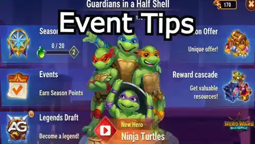

Este artigo fornece um guia abrangente sobre os recursos, mecânicas e recompensas do evento. Prepare-se para aproveitar ao máximo esta oportunidade única na vida!

Ilustração do Evento Guardiões em Meio a Conchas do jogo Hero Wars Alliance, desenvolvido pela Nexters.
Adquira as Tartarugas Ninja como uma unidade de herói individual.
Desbloqueie skins únicas para Ishmael e Luther.
Ganhe itens exclusivos como o Talismã da Concha e recursos exclusivos do evento.
Nota: Embora upgrades futuros para as tartarugas sejam possÃveis, você deve convocá-las durante este evento para acessar essas melhorias mais tarde.
Como começar no evento
A jornada começa ao completar a primeira missão no Mapa de Aventura, onde os jogadores recebem as Tartarugas Ninja com uma estrela. A partir daÃ, você pode:
Coletar Pedras da Alma, Pedras de Skin e fragmentos de Armas de Artefato na loja do evento.
Fatias de Energia são consumidas, independentemente de você vencer ou perder uma batalha contra um chefe.
Use o Ãcone de ponto de interrogação em batalhas desafiadoras para preparar sua equipe para o sucesso.
Tartarugas Ninja como Heróis
No evento, as Tartarugas Ninja operam como uma única unidade de herói. Enquanto sua força combinada as torna formidáveis, elas compartilham os mesmos:
Artefatos
Skins
Atributos, incluindo saúde e poder de ataque
Essa configuração única garante upgrades simplificados e uma experiência de jogo coesa.
Como fortalecer as Tartarugas
Coletar Pedras da Alma para melhorar o nÃvel de estrela delas.
Usar Pedras de Skin exclusivas do evento para aprimorar skins especiais.
Reunir fragmentos de Armas de Artefato para impulsionar suas capacidades em combate.
Loja do Evento: desbloqueie recompensas exclusivas
A loja do evento oferece uma riqueza de recursos para aprimorar seus heróis. Usando moedas ganhas em missões e tarefas, os jogadores podem adquirir:
Pedras da Alma e Pedras de Skin das Tartarugas Ninja
Talismã da Concha para bônus adicionais
Fragmentos da Arma de Artefato das tartarugas
Recursos adicionais como Fatias de Energia, Energia Engarrafada e Bonecos da Natureza
Evento Guardiões em Meio a Conchas no Hero Wars.
Imagem obtida de HWA Library.
Moedas na Loja
Moedas das Tartarugas Ninja: Obtidas em missões e tarefas.
Mutacápsulas: Obtidas ao derrotar o chefe final ou comprando ofertas especiais.
Análise de Custo: Você gastará 50 Esmeraldas por baú, totalizando 250 Esmeraldas por dia.
Recompensa Fatia de Energia: Ao completar essa missão diária, você ganhará 20 Fatias de Energia por dia.
Duração do Evento: Durante os 21 dias do evento, você gastará 5.250 Esmeraldas no total e ganhará 420 Fatias de Energia adicionais.
Maximizando Fatias de Energia, Hero Wars Alliance.
Essa energia extra aumentará significativamente sua capacidade de progredir na campanha, ajudando você a completar mais missões e, por fim, conquistar o Talismã da Concha.
Dante: Agilidade excepcional e alta sobrevivência, ideal para esquivar de chefes de alto dano.
Iris: Oferece dano explosivo e pode enfraquecer inimigos com suas habilidades poderosas.
Octavia: Essencial para controle de multidão e dano em área (AoE), garantindo a eliminação eficiente das ondas inimigas.
Utilizando essa composição de equipe, você poderá gerenciar os custos de energia de forma eficaz e maximizar suas chances de sucesso, mesmo nas fases mais difÃceis da campanha.
À medida que você progride, o evento recompensa os jogadores com diversos upgrades e itens colecionáveis. De baús raros a artefatos poderosos, cada missão oferece incentivos emocionantes.
Recompensas das Missões de Aventura
Pedras da Alma das Tartarugas Ninja
Pedras de Skin
Moedas do evento para compras na loja
Recompensa Especial de Marco: Derrotar o chefe final 30 vezes concede o cobiçado Talismã da Concha.
Posso melhorar as tartarugas no futuro? Sim, mas apenas se você convocá-las durante este evento.
O que são Mutacápsulas e como obtê-las? Mutacápsulas são uma moeda obtida ao derrotar o chefe final ou comprando ofertas especiais.
Como altero os nÃveis de dificuldade nas missões de aventura? Toque no botão Alterar antes de iniciar uma missão. Dificuldades mais altas oferecem melhores recompensas.
As batalhas contra chefes consomem Fatias de Energia mesmo que eu perca? Sim, cada tentativa consome Fatias de Energia, independentemente do resultado.
Você gostou das nossas dicas do evento das Tartarugas Ninja? Há algo que não entendeu ou gostaria de sugerir mudanças? Convidamos você a se juntar à nossa sessão de comentários na página do Alexandre Games Blog. Não hesite em expressar sua opinião, clarificar suas dúvidas e compartilhar sua sugestões. Clique no botão abaixo para começar:


 Hero Wars") Como Derrotar Cada Herói - Hero Wars
Como Derrotar Cada Herói - Hero Wars
 Tier List Hero Wars JvJ
Tier List Hero Wars JvJ